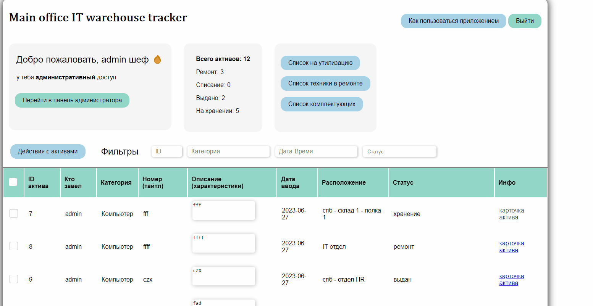
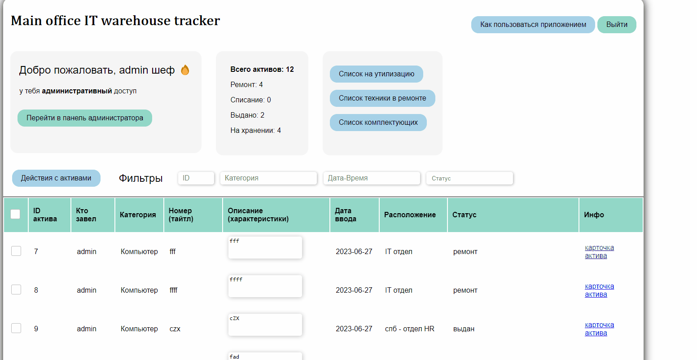

Программа разработана для учета активов IT отдела.
Она позволяет:
- Вести учет активов на складах
- Следить за перемещениями активов
Пользоваться приложением можно через WEB терминал или телеграмм бота
WEB TERMINAL (http://{адрес_сервера}/app:9000)
Авторизация и доступы
Управление активами:
Управление активами в веб терминале реализовано на основе разделения пользователей на админов и юзеров.
При каждой авторизации пользователя ему выдается закодированный JWT токен на 10 часов работы.
После истечения срока действия токена, пользователя перенаправит на страницу авторизации
- Админы могут:
- Создавать и удалять пользователей
- Создавать и удалять активы
- Пользователи могут:
- Создавать активы
- Изменять описание активов
- Перемещать активы
- Ремонтировать активы
- Списывать активы
Работа с активами
Создание (новой карточки для техники)

*данную картинку можно сохранить себе и посмотреть в полноразмерном формате
При создании активов вы можете выбрать несколько фото. По адресу \\fs-mo\admins\Photo_warehouse\photos\ создастся папка с ID актива и там будут храниться все фото.
Добавить фото или файлы
Вы можете выбрать актив и загрузить в его папку дополнительные фото или файлы
Перемещение

*данную картинку можно сохранить себе и посмотреть в полноразмерном формате
При перемещении активов - каждое новое место записывается отдельно в БД с уникальным трек номером. Так что ничего не потеряется. По кнопке - "Посмотреть перемещения актива" - вы можете найти все места и ответственных, на ком числилась техника. Переместить можно сразу несколько активов
Удаление
Кнопка - "удаление". Удалить можно сразу несколько активов. При удалении стирается вся информация о технике из БД так же удаляется папка с сервера. Данные записываются в логи
Списание
Кнопка - "Отправить на списание". Отправить на списание можно сразу несколько активов.
При отправке на списание, акутиву присваивается статус "списание" и создается новое перемещение - "отправлен на списание".
Активы отправленные на списание можно увидеть в таблице списания. Перейти туда можно по кнопке "Список на утилизацию".
В данной таблице вы можете распечатать список активов. И отправить (при наличии удостоверяющих документов (акта на списание и фотографий списания)) технику на утилизацию. Это делается по кнопке - "Списать активы". После ее нажатия, подгрузки документов и согласия на списания, произойдет следующее:
В папке \\fs-mo\ADMINS\Photo_warehouse\archive_after_utilization создастся новая папка именем которой будет дата и количество списанных активов. Она будет создержать внутри:
- акт списания
- папку material_old_photos - в которой будут размещены подпапки с фотографиями и документами списанной техники (сделанные при заведения актива)
- папку trashing_photos - куда загрузятся фотографии самого списания

*данную картинку можно сохранить себе и посмотреть в полноразмерном формате
История перемещений и ремонтов каждого списанного актива будет перемещена в таблицу Archive (списки утилизаций можно посмотреть на странице архива. Туда ведет кнопка "перейти в архив". Она располагается на странице списания техники
Ремонт
Если взять актив в ремонт любым методом то создастся папка в папке актива с именем "Repairs"
Актив находящийся в статусе "выдан" или "хранение" можно взять в ремонт.
Каждому новому ремонту присваивается уникальный идентификатор типа "imL7W6GMnfwoB1vClyuc", таким образом создается карточка 1 ремонта. К ней можно сколько угодно добавлять данные по кнопке "добавить инфо к ремонту".
Все активные ремонты можно посмотреть по кнопке - "Список ремонта".
По кнопке "Быстрый ремонт" можно взять актив в ремонт и сразу же вывести его оттуда, вписав проблему и решение. Это сделано для:
- ведения статистики
- отслеживания изменений в комплектации
- при быстром ремонте запись в таблицу перемещений не делается
Быстрый ремонт
Взять в ремонт
Добавить информацию к ремонту
Выдать из ремонта
Схема работы приложения тут - https://drive.google.com/drive/folders/1FbpE92MyDzIcI6w6B8nmeScB0JO1vkLL?usp=drive_link (актуализирована в марте 2023)
Создание пользователей
Новых пользователей может создавать только администратор через веб-консоль (Swagger или приложение).
Если стал админом, нужно перелогиниться для вступления прав в силу. Потому что ты авторизован под одним JWT токеном, а для администратора он формируется другой.
Немного про панель администратора.
Из нее можно попасть в Swagger (это встроенный в fastapi фронтенд для работы с методами API (на него тоже сделана авториазция так что даже если обычный пользователь туда зайдет - права его сохранятся (когда нибудь я закрою доступ туда пользователям без админских прав
Логирование
Какие действия логируются:
- Вход в приложение
- Создание пользователя
- Удаление пользователя
- Создание актива
- Удаление актива
- Изменение описания актива
- Перемещение актива
- Добавление к списанию и архивация активов
- Ремонт активов (в разработке)
Все действия пишутся в отдельную таблицу базы данных - Logs, и выводятся на веб по 100 пунктов с пагинацией.